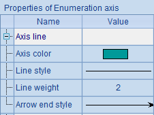
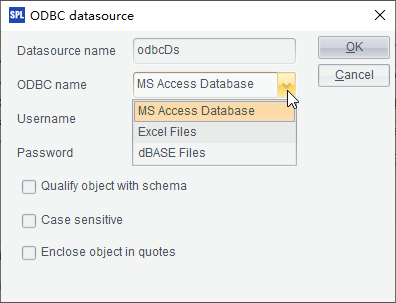

A date axis is similar to a numeric axis. But its logical coordinates are date/time data, not numeric values. A date axis is commonly used to plot charts like tendency chart, run chart, etc.
Below is the plotting algorithm of a stock trend chart:
|
|
A |
|
1 |
=canvas() |
|
2 |
=demo.query("select * from STOCKRECORDS where STOCKID='002242'") |
|
3 |
=A1.plot("BackGround") |
|
4 |
=A1.plot("DateAxis","name":"x","format":"dd/M","displayStep":20) |
|
5 |
=A1.plot("NumericAxis","name":"y","location":2,"autoCalcValueRange": false,"maxValue":50.0) |
|
6 |
=A1.plot("Line","markerWeight":2,"axis1":"x","data1":A2.(DATE),"axis2": "y","data2":A2.(CLOSING)) |
|
7 |
=A1.draw@p(450,250) |
In which A2 retrieves data for plotting the chart from the database:

A3 plots a white background. A4 plots x-axis as the date axis, calculating value range automatically and only displaying trade dates on the graduation labels. A5 plots y-axis as the numeric axis with the maximum value being 50. A6 plots a trend line using logical coordinates including trade dates and closing stock prices. Here¡¯s A7¡¯s plotting result:

From the above chart you can notice that data points are only plotted on trade dates when the statistical data is available. The date axis is also a continuous axis, just like the numeric axis.